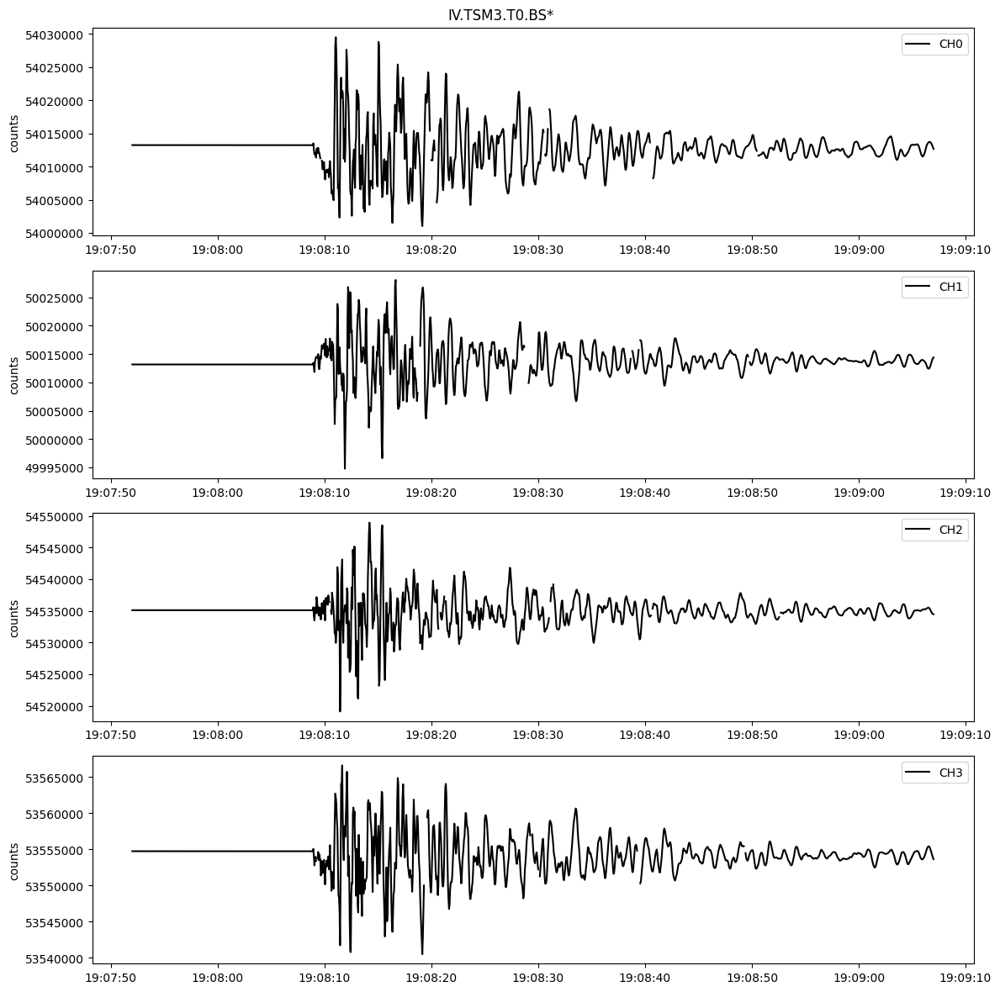
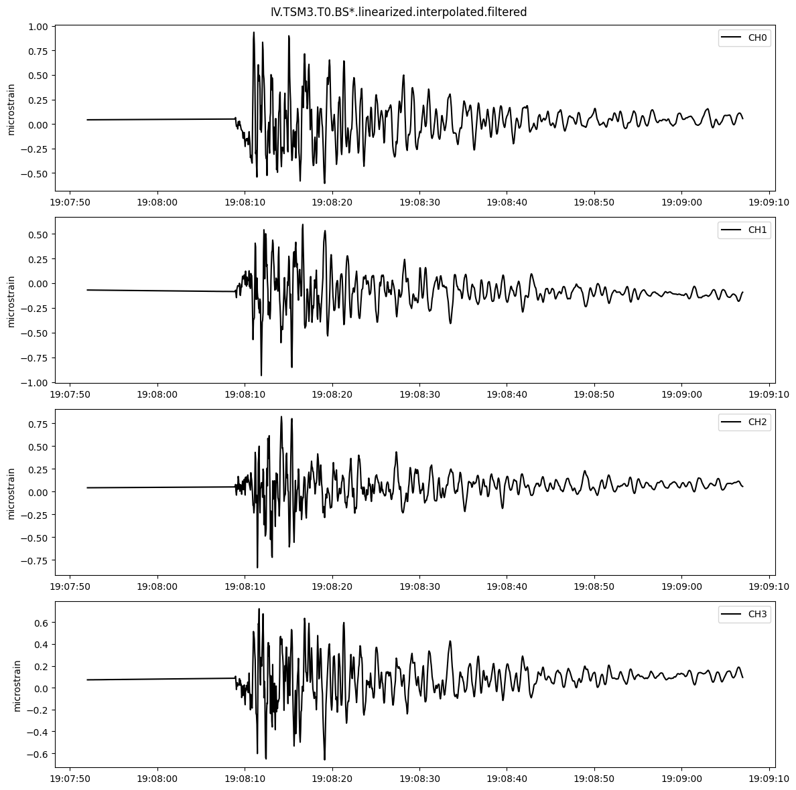
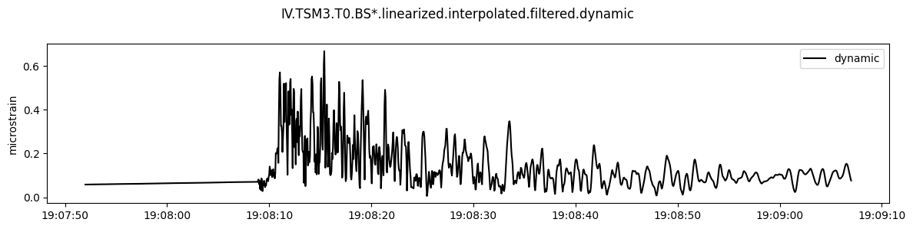
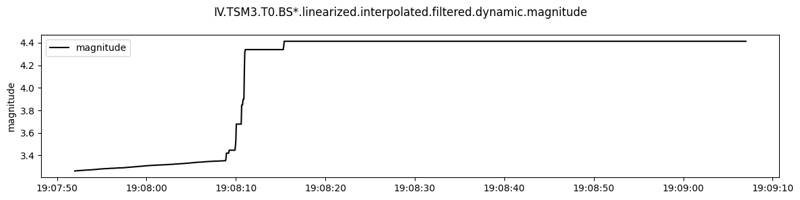
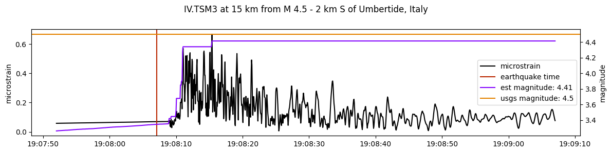
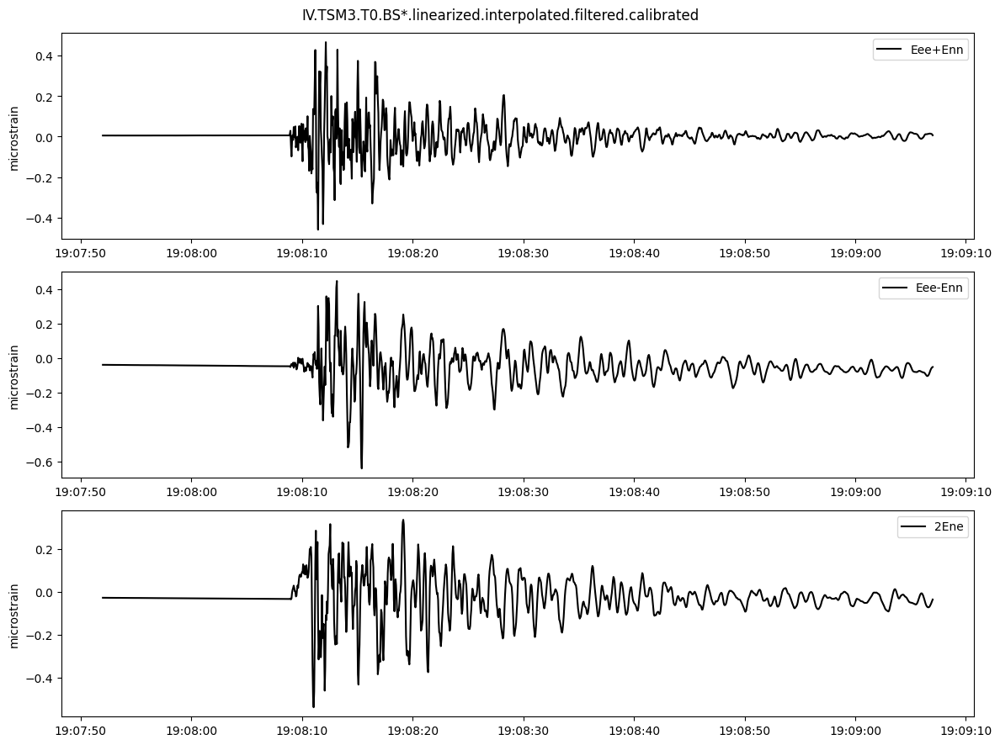
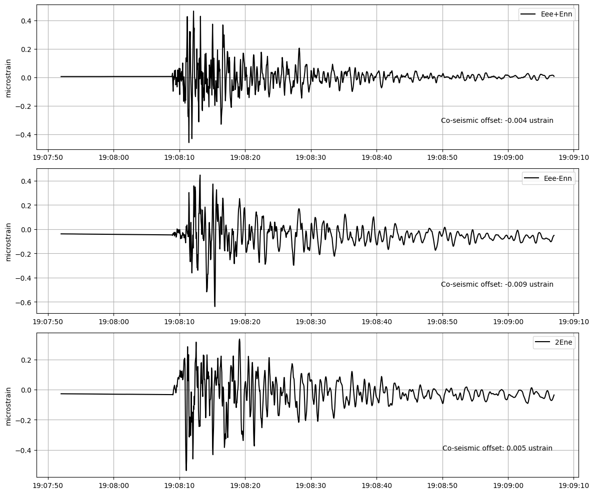

Example of looking at high rate event data from a strainmeter
[1]:
import numpy as np
import pandas as pd
import math
from earthscopestraintools.mseed_tools import ts_from_mseed
from earthscopestraintools.gtsm_metadata import GtsmMetadata
from earthscopestraintools.timeseries import Timeseries
from earthscopestraintools.event import Earthquake
from earthscopestraintools.event_processing import calc_hypocentral_dist, magnitude_plot, plot_coseismic_offset
from datetime import datetime, timedelta
import logging
logger = logging.getLogger()
logging.basicConfig(
format="%(message)s", level=logging.INFO
)
[2]:
network = 'IV'
station = 'TSM3'
meta = GtsmMetadata(network,station)
Load event data based on USGS event_id
[3]:
eq = Earthquake(event_id = "us7000jiky")
hypocentral_distance = calc_hypocentral_dist(eq.lat,
eq.long,
eq.depth,
meta.latitude,
meta.longitude)
print(f"USGS Magnitude {eq.mag} at {hypocentral_distance} km at {eq.time}")
meta.get_event_terms()
USGS Magnitude 4.5 at 15 km at 2023-03-09 19:08:07.123000+00:00
Load raw strain data
[5]:
start = (eq.time - timedelta(seconds=15)).strftime("%Y-%m-%dT%H:%M:%S")
end = (eq.time + timedelta(seconds=60)).strftime("%Y-%m-%dT%H:%M:%S")
strain_raw = ts_from_mseed(network=network, station=station, location='T0', channel='BS*', start=start, end=end)
strain_raw.stats()
strain_raw.plot(type='line')
Loading T0 BS* from 2023-03-09T19:07:52 to 2023-03-09T19:09:07 from Earthscope DMC miniseed
Trace 1. 2023-03-09T19:07:52.000000Z:2023-03-09T19:09:07.000000Z mapping BS1 to CH0
Trace 2. 2023-03-09T19:07:52.000000Z:2023-03-09T19:09:07.000000Z mapping BS2 to CH1
Trace 3. 2023-03-09T19:07:52.000000Z:2023-03-09T19:09:07.000000Z mapping BS3 to CH2
Trace 4. 2023-03-09T19:07:52.000000Z:2023-03-09T19:09:07.000000Z mapping BS4 to CH3
Found 0 epochs with nans, 17.75 epochs with 999999s, and 0 missing epochs.
Total missing data is 1.18%
Converting missing data from 999999 to nan
Converting 999999 values to nan
Found 17 epochs with nans, 0.0 epochs with 999999s, and 0 missing epochs.
Total missing data is 1.13%
IV.TSM3.T0.BS*
| Channels: ['CH0', 'CH1', 'CH2', 'CH3']
| TimeRange: 2023-03-09 19:07:52 - 2023-03-09 19:09:07 | Period: 0.05s
| Series: raw| Units: counts| Level: 0| Gaps: 1.13%
| Epochs: 1501| Good: 1483.25| Missing: 17.75| Interpolated: 0.0
| Samples: 6004| Good: 5933| Missing: 71| Interpolated: 0

Convert counts to microstrain
[6]:
gauge_microstrain = strain_raw.linearize(reference_strains=meta.reference_strains, gap=meta.gap)
gauge_microstrain.stats()
Converting raw counts to microstrain
Found 17 epochs with nans, 0.0 epochs with 999999s, and 0 missing epochs.
Total missing data is 1.13%
IV.TSM3.T0.BS*.linearized
| Channels: ['CH0', 'CH1', 'CH2', 'CH3']
| TimeRange: 2023-03-09 19:07:52 - 2023-03-09 19:09:07 | Period: 0.05s
| Series: microstrain| Units: microstrain| Level: 1| Gaps: 1.13%
| Epochs: 1501| Good: 1483.25| Missing: 17.75| Interpolated: 0.0
| Samples: 6004| Good: 5933| Missing: 71| Interpolated: 0
Interpolate and high pass filter (1000s cutoff)
[7]:
gauge_microstrain_interpolated = gauge_microstrain.interpolate(method='linear', limit_seconds=3600)
gauge_microstrain_interpolated.stats()
#ts3.plot(type='line')
Interpolating data using method=linear and limit=72000
Found 0 epochs with nans, 0.0 epochs with 999999s, and 0 missing epochs.
Total missing data is 0.0%
IV.TSM3.T0.BS*.linearized.interpolated
| Channels: ['CH0', 'CH1', 'CH2', 'CH3']
| TimeRange: 2023-03-09 19:07:52 - 2023-03-09 19:09:07 | Period: 0.05s
| Series: microstrain| Units: microstrain| Level: 1| Gaps: 0.0%
| Epochs: 1501| Good: 1483.25| Missing: 0.0| Interpolated: 17.75
| Samples: 6004| Good: 5933| Missing: 0| Interpolated: 71
[8]:
gauge_microstrain_filtered = gauge_microstrain_interpolated.butterworth_filter(filter_type='high', filter_order=2, filter_cutoff_s=1000)
gauge_microstrain_filtered.stats()
gauge_microstrain_filtered.plot(type='line')
Applying Butterworth Filter
Found 0 epochs with nans, 0.0 epochs with 999999s, and 0 missing epochs.
Total missing data is 0.0%
IV.TSM3.T0.BS*.linearized.interpolated.filtered
| Channels: ['CH0', 'CH1', 'CH2', 'CH3']
| TimeRange: 2023-03-09 19:07:52 - 2023-03-09 19:09:07 | Period: 0.05s
| Series: | Units: microstrain| Level: 1| Gaps: 0.0%
| Epochs: 1501| Good: 1483.25| Missing: 0.0| Interpolated: 17.75
| Samples: 6004| Good: 5933| Missing: 0| Interpolated: 71

Calculate dynamic strain and estimated magnitude using Barbour et al 2021
[9]:
dynamic_strain = gauge_microstrain_filtered.dynamic_strain()
dynamic_strain.stats()
dynamic_strain.plot(type='line')
Calculating dynamic strain using gauge weights: [1, 1, 1, 1]
Found 0 epochs with nans, 0.0 epochs with 999999s, and 0 missing epochs.
Total missing data is 0.0%
IV.TSM3.T0.BS*.linearized.interpolated.filtered.dynamic
| Channels: ['dynamic']
| TimeRange: 2023-03-09 19:07:52 - 2023-03-09 19:09:07 | Period: 0.05s
| Series: dynamic| Units: microstrain| Level: 1| Gaps: 0.0%
| Epochs: 1501| Good: 1435.0| Missing: 0.0| Interpolated: 66.0
| Samples: 1501| Good: 1435| Missing: 0| Interpolated: 66

[10]:
estimated_magnitude = dynamic_strain.calculate_magnitude(hypocentral_distance, meta.site_term, meta.longitude_term)
estimated_magnitude.plot()
Calculating magnitude from dynamic strain using site term 0 and longitude term 0
Found 0 epochs with nans, 0.0 epochs with 999999s, and 0 missing epochs.
Total missing data is 0.0%

[11]:
title = f"{network}.{station} at {hypocentral_distance} km from {eq.name}"
magnitude_plot(dynamic_strain_df=dynamic_strain.data,
magnitude_df=estimated_magnitude.data,
eq_time=eq.time,
eq_mag=eq.mag,
title=title)

Plot any co-seismic offsets in regional strains
[14]:
regional_microstrain = gauge_microstrain_filtered.apply_calibration_matrix(meta.strain_matrices['lab'])
regional_microstrain.plot()
Applying None matrix: [[ 0.2962963 0.51851852 0.2962963 0.22222222]
[ 0.16507151 0.30039401 -0.28522912 -0.1802364 ]
[-0.35550881 0.21665099 0.26884841 -0.12999059]]
Found 0 epochs with nans, 0.0 epochs with 999999s, and 0 missing epochs.
Total missing data is 0.0%

[15]:
plot_coseismic_offset(
df = regional_microstrain.data,
plot_type='line',
units = 'microstrain',
eq_time= eq.time,
coseismic_offset = True,
color="black",)

[ ]: